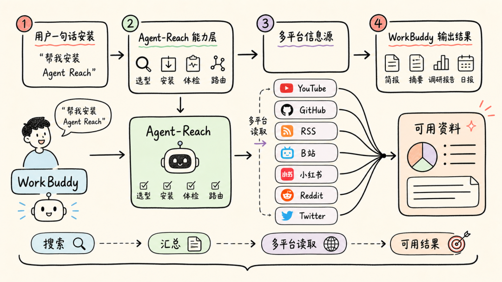
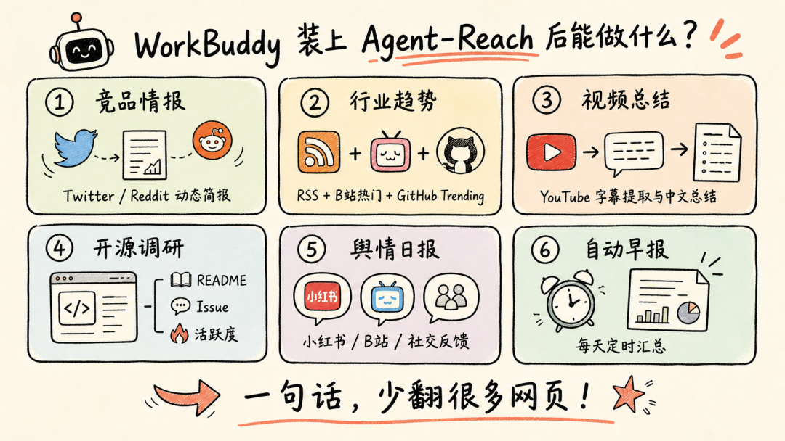
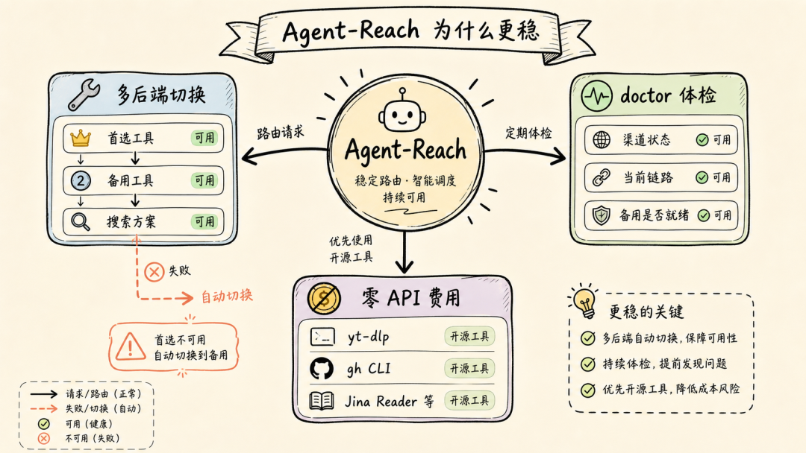

WorkBuddy 很能干，但它过去有个短板：很多外部网页和平台内容，它看不见。Agent-Reach 正好补上了这一块。
如果你已经在用 WorkBuddy，大概率体验过它的省心：写文档、做 PPT、整理会议纪要、操作本地文件，甚至远程控制电脑。很多重复活儿交给它之后，人确实轻松不少。
但它也有让人挠头的时候。
你想让它看看竞品最近在 Twitter 上发了什么，它会告诉你访问不了外部网页。你丢给它一个 YouTube 视频链接，想让它总结重点，它也只能摊手。你让它读 GitHub 上某个项目的 README，它常常会让你把内容复制过来。
说白了，WorkBuddy 像一个很会干活的同事，但这个同事以前坐在一间没有窗户的办公室里。
Agent-Reach：给 WorkBuddy 开一扇窗

Agent-Reach 是一个开源的能力层。它做的事情不复杂：把 AI Agent 连接到 Twitter、Reddit、YouTube、GitHub、B 站、小红书、LinkedIn、RSS 等互联网信息源。
它不是单个爬虫，也不是某个平台的插件合集。更准确地说，它像一个“调度员”：帮 Agent 判断该用哪个工具、怎么安装、能不能正常跑，出问题时再切到备用方案。
装到 WorkBuddy 之后，你就可以直接把这句话发给它：
帮我安装 Agent Reach：https://raw.githubusercontent.com/Panniantong/agent-reach/main/docs/install.md
后面的配置由 WorkBuddy 自己处理。你不需要手动申请一堆 API Key，也不用在不同平台之间来回折腾。
装上之后，它能帮你少翻很多网页
WorkBuddy 原本已经能很好地接入腾讯生态，比如 QQ 邮箱、腾讯会议、腾讯文档、腾讯乐享、TAPD。问题是，职场里真正要看的信息往往不只在一个生态里。竞品动态可能在 Twitter，技术讨论在 Reddit，开源方案在 GitHub，产品口碑散落在内容社区平台。
Agent-Reach 补的就是这块空白。

比如做竞品情报。你可以直接说：“帮我看一下最近一周，XX 公司在 Twitter 和 Reddit 上有什么新动作，整理成一份简报。”WorkBuddy 会自己去搜、去读，再把内容合成一份能看的材料。以前要一页页翻，现在你只要负责提需求和看结果。
再比如行业趋势追踪。你可以让它每天早上抓 RSS、B 站科技区热门、GitHub Trending，然后生成一份科技早报。这个场景很适合管理者，也适合内容团队。你不必每天打开十几个网页，信息会自己汇总过来。
视频内容也一样。同事发来一个 40 分钟的 YouTube 技术分享，你不一定有时间完整看完。把链接丢给 WorkBuddy，让它提取字幕、总结核心观点，再顺手翻译成中文，效率会高很多。
技术团队做开源项目调研时，也能少一些体力活。让 WorkBuddy 读 README、Issue 讨论和项目活跃度，再整理成评估报告，至少可以先把第一轮信息摸清楚。
还有舆情监控。品牌活动上线后，让它同时看看内容社区平台、Twitter 上的反馈，整理成日报。过去这类事要么靠专门工具，要么靠人盯，现在可以先交给 AI 助手跑一遍。
我更看重的是“出问题时有人兜底”

很多人一听“给 Agent 上网”，第一反应可能是：这不就是装个爬虫吗？
差别其实挺大。随便装一个工具，最怕的是今天能用，明天就挂。Agent-Reach 的思路是给每个平台准备多条路。比如 B 站优先走一个工具，如果遇到风控或不可用，就切到备用工具，再不行再换搜索方案。用户不需要每次自己排查。
它还有一个 agent-reach doctor 命令，可以直接检查各渠道的健康状态：现在走哪条链路，备用方案有没有准备好，哪里可能出问题。对普通用户来说，这比“报错了你自己猜”友好得多。
另一个优点是它不绑死某个 Agent。Claude Code、Cursor、Windsurf、OpenClaw，以及 WorkBuddy，只要能跑命令行，都有机会接上这层能力。
费用上也比较轻。Agent-Reach 路由到的上游工具大多是免费或开源工具，比如 yt-dlp、GitHub CLI、Jina Reader 这类，不用一上来就准备额外的 API 预算。
怎么装，别想复杂了
流程可以很简单。
先确认 WorkBuddy 处在能执行命令的模式。日常办公模式一般就够用。
然后把这句话发给它：
帮我安装 Agent Reach：https://raw.githubusercontent.com/Panniantong/agent-reach/main/docs/install.md
等安装完成后，跑一次：
agent-reach doctor如果你希望它顺便安装系统级依赖，比如 yt-dlp、GitHub CLI，可以追加 --system。拿不准的话，先用 --dry-run 看看它准备做什么，再决定要不要执行。
WorkBuddy 负责做事，Agent-Reach 负责找资料
WorkBuddy 本来就像一个桌面数字员工：能处理文件、连腾讯生态、执行任务，也能远程操作电脑。Agent-Reach 加进来后，它不只是能“做”，还更会“看”。
这点很关键。AI 助手如果只能处理你喂给它的材料，它最多是一个更聪明的加工器；如果它能自己去找资料、读资料、交叉验证，再把结果交给你判断，它才更接近一个真正的工作搭档。
当然，这不代表人可以完全撒手不管。外部信息会过时，也可能有噪音，重要结论仍然要复核。但至少，第一轮搜索、阅读、汇总这些费时间的步骤，可以交给 WorkBuddy 先跑起来。
对我来说，这就是 Agent-Reach 最有价值的地方：它不是把 WorkBuddy 变成另一个浏览器，而是让它终于能自己走出那间没有窗户的办公室。
Agent-Reach 开源地址：https://github.com/Panniantong/agent-reach\
WorkBuddy 官网：workbuddy.cn
我是 token之心，用不同视角解读 AI 浪潮，分享前沿趋势与深度思考。